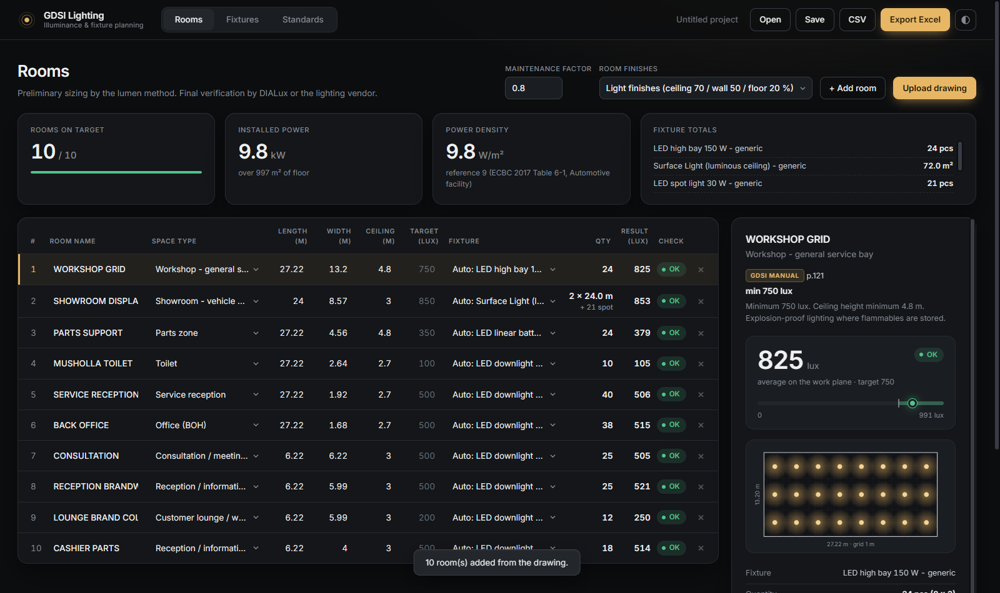
The GDSI Lighting Calculator gives a preliminary lighting design for each room of a dealer facility. You upload the floor plan or ceiling plan as one DXF file (or enter rooms by hand); the tool finds every room, looks up the required illuminance, calculates how many fixtures are needed, draws a layout and produces a schedule.
Illuminance figures come from the Hyundai GDSI 2.0 Guideline. Where the guideline gives no figure, the Indian standard IS 3646 (Part 1): 1992 is used and clearly marked.
The result is for design coordination and budgeting. Final verification must be done in DIALux or by the lighting vendor.
| Description | |
|---|---|
| What it does | Standard lookup by space type · fixture quantity by the lumen method · regular grid layout · power density check · Excel / CSV schedule · reads rooms from a DXF floor plan or ceiling plan |
| What it does not do | Point-by-point illuminance, uniformity, glare (UGR), daylight, emergency lighting, exporting the layout back to CAD (planned for Stage 3) |
Screen size. The tool is designed for PC monitors. On screens narrower than 1500 px the result panel moves below the room table. Phones are not supported.
Where your data is kept. Rooms and registered fixtures are saved automatically in the browser of the PC you are using. Nothing is sent to a server — uploaded drawings are read inside the browser and never leave the PC. Another PC or another browser will not show your rooms — use Save and Open to move a project.
Updates. When the tool is updated you receive the new version the next time you open the page. If the screen looks unchanged, press Ctrl + F5.
.json file in the project folder.| Item | Description |
|---|---|
| Rooms / Fixtures / Standards | Three tabs. Rooms is the working screen, Fixtures is the fixture library, Standards is the reference table. |
| Project name | Shown in the Excel title and used as the file name. |
| Manual | Opens this user manual in a new tab. |
| Open | Loads a project file (.json) saved earlier. Replaces the rooms currently on screen after confirmation. |
| Save | Downloads the whole project — rooms, settings and registered fixtures — as one .json file. |
| CSV | Plain schedule without formatting, for pasting into other tools. |
| Export Excel | Formatted Excel schedule with three sheets. See section 9. |
| ◐ (half-moon button) | Switches between the dark and the light screen. The choice is remembered. |
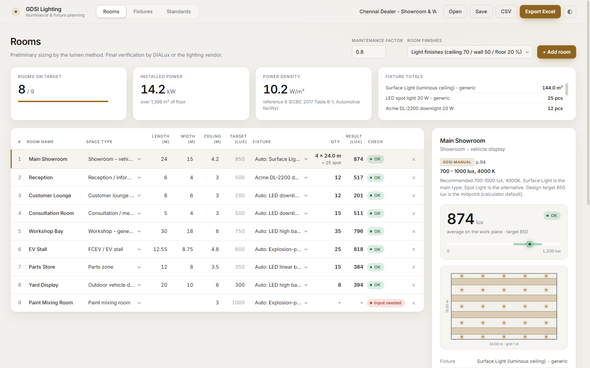
Instead of typing rooms one by one, upload the whole floor plan or reflected ceiling plan as one file. The tool finds every room, reads its name and area, guesses the space type from the name and reads the ceiling height from CH texts. You check the result on a preview before anything is added.
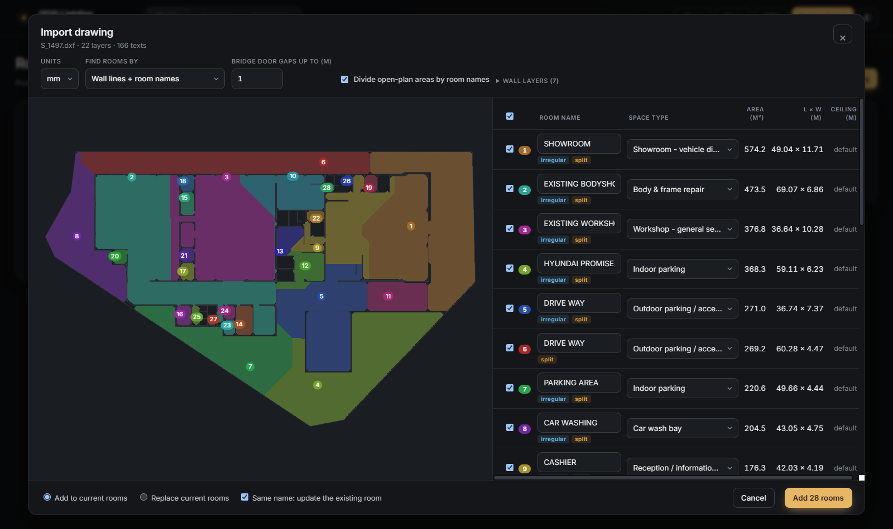
The tool chooses the method automatically. You can switch it with Find rooms by.
| Method | Description |
|---|---|
| Room outlines (closed polylines) | Used when the drawing has a layer of closed polylines around each room — typically a zone, room or area layer (e.g. C-ZONE, A-ROOM). Each outline is one room; the text inside it is the room name. This is the most accurate method. Choose the layer in Outline layer; the list shows how many outlines and named outlines each layer has. |
| Wall lines + room names | Used when no room outlines are drawn. The wall layers are drawn on a fine grid and the space around each room-name text is filled up to the walls. • Bridge door gaps up to (m) — openings narrower than this (default 1.0 m) are treated as closed, so the fill stops at doors. Raise it for wide openings; lower it if two rooms merge. • Wall layers — the layers used as walls (walls, partitions, columns, glazing, doors, windows are ticked automatically). Tick or untick to correct. • Divide open-plan areas by room names — when one open area holds several room names (showroom + lounge + reception), it is divided between the names. The dividing line is approximate; these rooms are tagged split. |
| Item | Description |
|---|---|
| Units | Taken from the DXF header (mm, cm, m, inch, feet). If the file does not state them, mm is assumed and a warning is shown — check Units. |
| Room name | The largest text inside the room. Texts on name layers (ROOM, NAME, ZONE, AREA, SPACE) and texts with an area note win. Area notes such as 96 SQ.FT. or 12 m2 are removed from the name. Dimensions, levels and tags (D1, W-02) are ignored. |
| Space type | Guessed from keywords in the name, e.g. SHOWROOM → Showroom, SERVICE RECEPTION → Service reception, TOILET / WC → Toilet, WHEEL ALIGNMENT → Wheel alignment, STORE → Store room. Common Indonesian words are understood too. A name that is not recognised gets Other (enter target) and the tag type? — choose the type in the list. |
| Area and size | The exact floor area of the room. Length × width is the rectangle with the same area and perimeter, so the room index used in the calculation is exact even for L-shaped rooms. Such rooms are tagged irregular; the layout sketch is schematic for them. |
| Ceiling height | Read from texts such as CH +3,000, C.H. 2700 or CH=2.85 inside the room (mm or m). If there is none, the default for the space type is used and shown as default. |
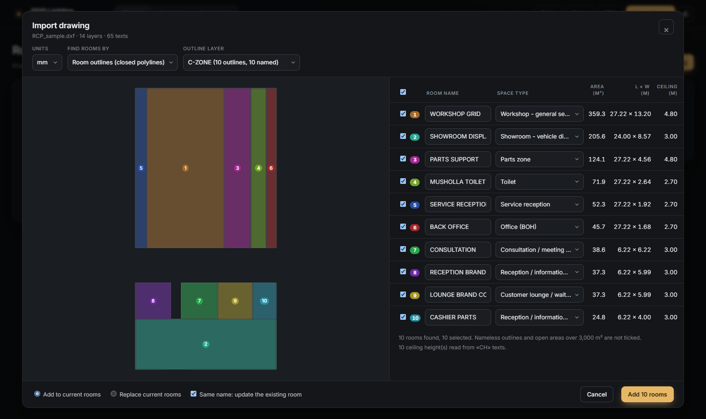
Rooms and ceiling heights are often on different drawings. Upload both:
At the bottom of the window choose Add to current rooms (default) or Replace current rooms.
| Tip | Description |
|---|---|
| Best: a room layer | Draw a closed polyline around each room on one layer (e.g. A-ROOM or A-ZONE) with the room name inside. The import is then exact and needs no wall detection. |
| Room names | One clear name per room, placed inside the room, using the GDSI room names (SHOWROOM, CUSTOMER LOUNGE, SERVICE RECEPTION, WORKSHOP …). |
| Ceiling heights | Put CH +3,000 style tags inside each room on the ceiling plan. |
| One plan per file | Remove other sheets (elevations, details, other floors) or save only the floor you need. Use model space; paper space is ignored. |
| Bind XREFs | Walls inside an unbound XREF are not in the DXF. Bind or insert them before saving. |
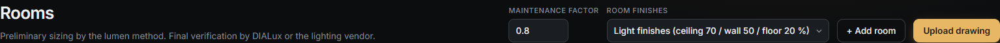
| Setting | Description |
|---|---|
| Maintenance factor | Allowance for light loss over time (dirt, lamp ageing). Default 0.8, allowed range 0.5 – 1.0. Applies to every room. Use a lower value for dusty areas such as workshops if the project requires it. |
| Room finishes | Reflectance of ceiling / wall / floor. Light 70 / 50 / 20 % (default), Medium 50 / 30 / 20 %, Dark or open ceiling 30 / 10 / 10 %. Darker finishes need more fixtures. |
| Upload drawing | Reads all rooms from a DXF floor plan or ceiling plan. See section 4. |
| + Add room | Adds one empty row at the bottom of the table for a room that is not on the drawing. |
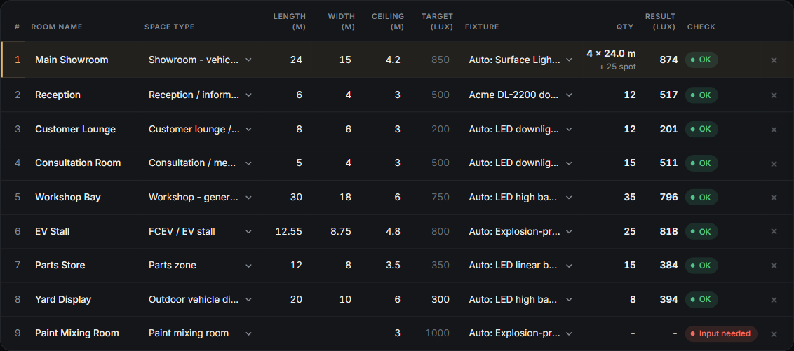
| Column | Input? | Description |
|---|---|---|
| Room name | ● | Free text, as on the drawing. |
| Space type | ● | Choose from 30 types in 7 groups. This decides the standard, the default ceiling height and the default fixture. |
| Length / Width (m) | ● | Clear room dimensions in metres. Filled in by the drawing upload (equivalent rectangle for irregular rooms). Typing a new value replaces the drawing size. |
| Ceiling (m) | ● | Finished ceiling height. A default is filled in for each space type — replace it with the real height. Until you do, a reminder is shown in the result panel. |
| Target (lux) | ○ | The grey number is the design value from the standard. Type a number only if the project needs a different target; delete it to go back to the standard. |
| Fixture | ○ | Auto uses the default fixture for the space type. Pick a Registered fixture when the real product is known. |
| Qty | — | Calculated quantity. For Surface Light: number of strips × length, plus supplementary spots. |
| Result (lux) | — | Average maintained illuminance on the work plane with that quantity. |
| Check | — | Pass / fail against the standard. See 5.3. |
| × | — | Deletes the room after confirmation. |
| Status | Description |
|---|---|
| OK | The average illuminance meets the required minimum and is not more than 10 % above the recommended maximum. |
| Too dark | Below the required minimum (or below the target you entered). Choose a higher-output fixture or check the ceiling height. |
| Too bright | More than 10 % above the recommended maximum. A lower-output fixture would save energy. |
| Check | The target is met but there is a note to review in the result panel. |
| Input needed | Something is missing — length, width, ceiling height, or a target for a space type that has no standard figure. |
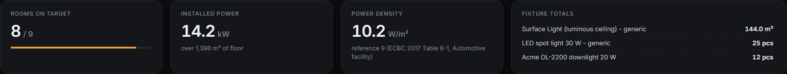
| Card | Description |
|---|---|
| Rooms on target | Rooms that pass / all rooms. Rooms with Too dark or Input needed do not count as passed. The bar is amber until every room passes. |
| Installed power | Total lighting load of all calculated rooms in kW, and the total floor area. |
| Power density | Installed power ÷ floor area (W/m²). The reference 9.0 W/m² is the ECBC 2017 whole-building value for an automotive facility — shown for comparison, not as a pass / fail. |
| Fixture totals | Quantity of each fixture over the whole project. Surface Light is counted in m² of luminous surface. |
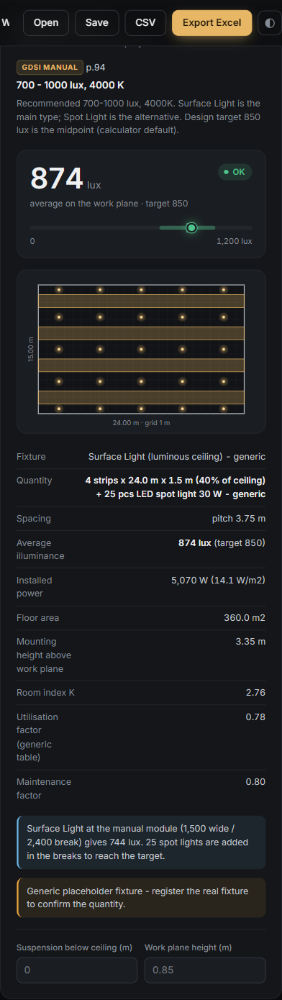
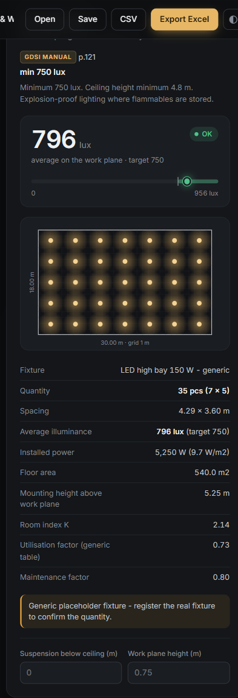
| Part | Description |
|---|---|
| Standard badge | GDSI MANUAL with the guideline page, IS 3646 with the clause, or ENTER when no figure exists. The line below shows the required range and colour temperature. |
| Large number and bar | Average illuminance. On the bar, the green band is the required range, the thin tick is the design target and the dot is the result. |
| Layout plan | Room outline with a 1 m grid. Dots are point fixtures, short lines are linear fixtures, gold bands are Surface Light strips. The long side of the room is always drawn horizontally. |
| Quantity / Spacing | Number of fixtures with columns × rows, and the centre-to-centre spacing in both directions. |
| Installed power | Total watts for the room and watts per m². |
| Mounting height above work plane | Ceiling height − suspension − work plane height. This drives the room index. |
| Room index K, UF, MF | The values used in the formula, shown so the calculation can be checked by hand. See section 10. |
| Coloured notes | Blue = information, amber = something to review, red = a problem to fix. |
| Suspension below ceiling (m) | Enter the drop if fixtures hang below the ceiling (pendants, high bays on chains). Default 0. |
| Work plane height (m) | Height at which illuminance is assessed. Default 0.85 m for general spaces, 0.75 m for workshop areas and 0 m (floor) for corridors, parking and outdoor areas. |
For the showroom, highlight zone and delivery zone the default fixture is the Surface Light (luminous ceiling). The tool follows the module in the GDSI guideline (p.94–95): strips 1,500 mm wide separated by 2,400 mm breaks, running along the long side of the room.
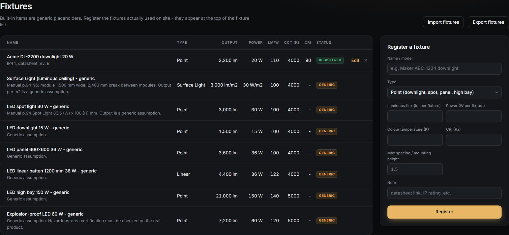
The seven built-in fixtures are generic placeholders (amber GENERIC badge). They let you start before the lighting vendor is chosen, but their output is an assumption.
Register the fixtures actually used on site as soon as the datasheets are available. Registered fixtures can then be selected in the Fixture column of the room table.
| Field | Description |
|---|---|
| Name / model | Maker and model number, as it should appear in the schedule. |
| Type | Point — downlight, spot, panel, high bay. Linear — batten, pendant line. Surface Light — luminous ceiling. |
| Luminous flux | Total lumens of one fixture, from the datasheet (luminaire lumens, not lamp lumens). For Surface Light: lumens per m² of luminous surface. |
| Power | Watts of one fixture including the driver. For Surface Light: watts per m². |
| Colour temperature / CRI | Optional. Shown in the fixture list and the Excel take-off. |
| Max spacing / mounting height | Spacing-to-height ratio from the datasheet. Default 1.5. The layout keeps the spacing within this ratio so the light stays even. Not used for Surface Light. |
| Length (m) | Linear fixtures only. Used for drawing the layout. Default 1.2 m. |
| Note | Datasheet link, IP rating, etc. |
Edit / delete. Use Edit or × on a registered row. If a deleted fixture was used in rooms, those rooms go back to the default fixture.
Share with colleagues. Export fixtures downloads gdsi-fixtures.json. A colleague clicks Import fixtures and chooses that file. Fixtures with the same ID are updated, new ones are added.
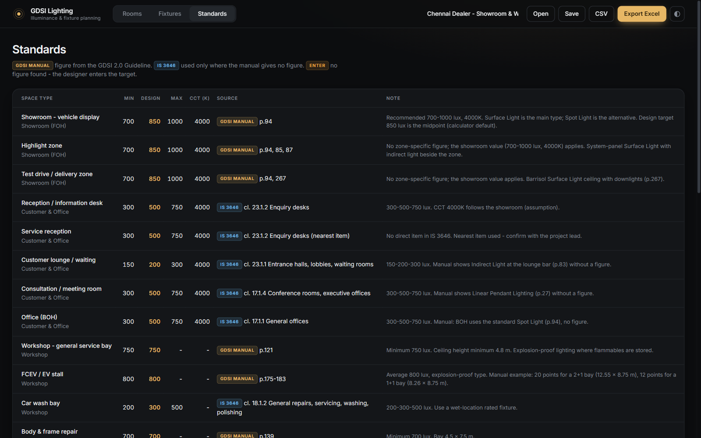
The table lists all 30 space types with the minimum, design and maximum illuminance, the colour temperature and the source. It is read-only.
Design is the value the calculator aims for. Where the source gives a range, the design value is the middle of the range.
| Badge | Description |
|---|---|
| GDSI MANUAL | Figure taken from the Hyundai GDSI 2.0 Guideline v2.0 (2022-06). The page number of the PDF is shown. 13 space types. |
| IS 3646 | The guideline gives no figure, so IS 3646 (Part 1): 1992, Table 1 is used. The clause is shown. 15 space types. |
| ENTER | No figure in either document (outdoor vehicle display, and Other). Enter the target agreed for the project in the Target column. |
The complete table is in Appendix A
| Button | File | Description |
|---|---|---|
| Save | project name.json | The working file. Keep it to continue later or to pass the project to a colleague. |
| Open | .json | Loads a saved project, including its registered fixtures. |
| Export Excel | project name-lighting-schedule.xlsx | The deliverable. Three formatted sheets, ready to print. |
| CSV | project name-lighting-schedule.csv | The same schedule as plain data. |
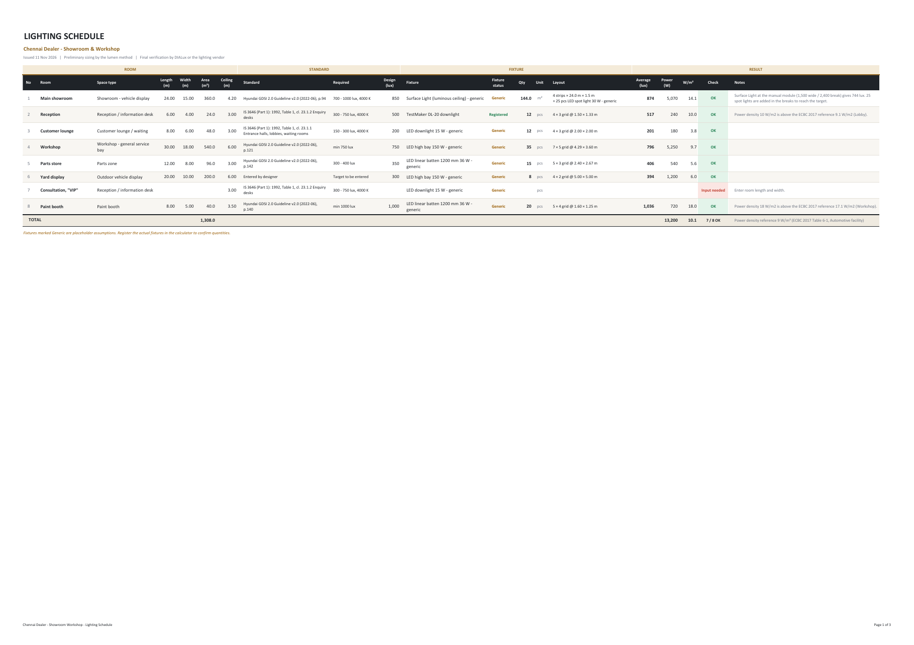
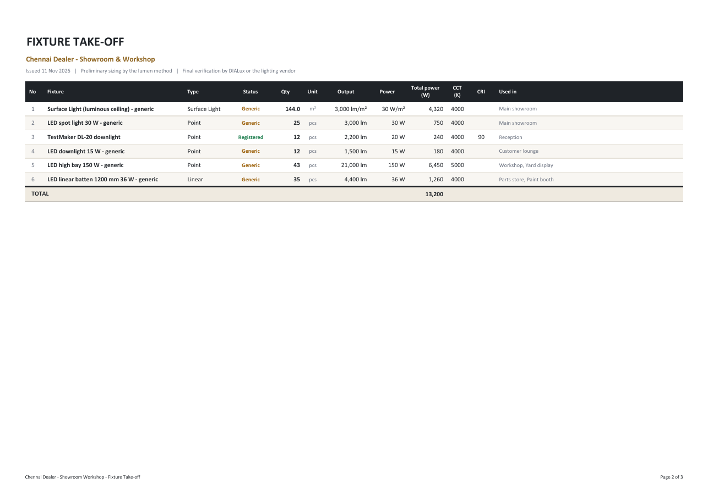
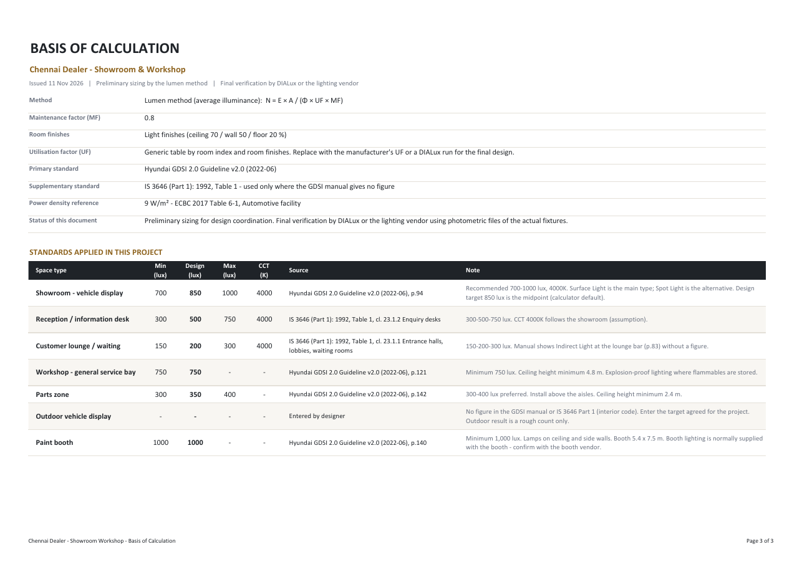
The tool uses the lumen method, which gives the average illuminance over the whole room. The steps below are the same for every room.
UF is the share of the fixture output that reaches the work plane. It is read from the table below by room index K and room finishes; values between two K figures are interpolated.
| Room index K | 0.6 | 0.8 | 1.0 | 1.25 | 1.5 | 2.0 | 2.5 | 3.0 | 4.0 | 5.0 |
|---|---|---|---|---|---|---|---|---|---|---|
| Light · 70 / 50 / 20 % | 0.42 | 0.50 | 0.56 | 0.62 | 0.66 | 0.72 | 0.76 | 0.79 | 0.83 | 0.85 |
| Medium · 50 / 30 / 20 % | 0.36 | 0.44 | 0.50 | 0.56 | 0.60 | 0.66 | 0.70 | 0.73 | 0.77 | 0.80 |
| Dark · 30 / 10 / 10 % | 0.31 | 0.39 | 0.45 | 0.51 | 0.55 | 0.61 | 0.65 | 0.68 | 0.73 | 0.76 |
The fixtures are placed on a regular grid, as square as possible, with half a spacing between the outer row and the wall.
The spacing must not exceed 1.5 × mounting height (or the ratio registered for the fixture). In a large low room this can require more fixtures than Step 3; the blue note then explains the difference.
Outdoor space types skip the spacing rule.
| Workshop Bay 30 × 18 m, ceiling 6.0 m | Description |
|---|---|
| Hm = 6.0 − 0 − 0.75 = 5.25 m | Workshop work plane is 0.75 m. |
| K = 540 ÷ (5.25 × 48) = 2.14 | Room index. |
| UF = 0.73 (light finishes) | Between 0.72 at K = 2.0 and 0.76 at K = 2.5. |
| N = 750 × 540 ÷ (21,000 × 0.73 × 0.8) = 32.96 → 33 | LED high bay 150 W, 21,000 lm. |
| Grid 7 × 5 = 35 pcs, 4.29 × 3.60 m | The nearest regular grid that holds at least 33 and keeps the spacing within 1.5 × 5.25 = 7.9 m. |
| Eavg = 35 × 21,000 × 0.73 × 0.8 ÷ 540 = 796 lux | Above the minimum 750 lux → OK |
| Item | Description |
|---|---|
| Generic fixtures | Output and power of the seven built-in fixtures are typical LED values, not manufacturer data. Quantities change when real fixtures are registered. |
| Utilisation factor | The UF table is a generic table for direct-distribution LED fixtures. A real fixture may differ by roughly ±10 %. |
| Default ceiling heights | Only the workshop minimum 4.8 m comes from the guideline. All other default heights are starting values — enter the real height. |
| Design target in a range | Showroom 700 – 1000 lux is designed to 850 lux (the midpoint). Enter another target if the project requires it. |
| Room shape | Rooms are treated as empty rectangles. Irregular rooms from a drawing use the rectangle with the same area and perimeter. Columns, vehicles, lifts, racks and partitions are not considered. |
| Drawing upload | Wall detection works on the lines as drawn: gaps wider than the door-gap setting let rooms merge, and open-plan areas are divided by room names only approximately. Rooms found from walls are about 3 % smaller than the area notes on the drawing (wall line thickness). Always check the preview. |
| Average only | The result is an average. Uniformity, glare and vertical illuminance on vehicles are not checked. |
| Outdoor areas | The room method is for interiors. Outdoor results are a rough count only — confirm with a pole-lighting calculation. |
| Paint booth | Booth lighting is normally supplied with the booth. Confirm with the booth vendor before adding fixtures. |
| Hazardous areas | FCEV / EV stalls and the paint mixing room need explosion-proof fixtures. The tool selects a generic explosion-proof fixture; certification must be checked on the real product. |
| Service reception | IS 3646 has no direct item; the nearest item (enquiry desks, 500 lux) is used. Confirm with the project lead. |
| Symptom | Description |
|---|---|
| Check shows Input needed | Enter length, width and ceiling height. For Outdoor vehicle display and Other, also enter a target. |
| “Mounting height above the work plane is too small” | Ceiling height minus suspension minus work plane is 0.3 m or less. Check the ceiling height and the suspension. |
| Quantity is higher than expected | The spacing rule (1.5 × mounting height) is adding fixtures in a low room. Choose a lower-output fixture, or register the real spacing ratio. |
| Rooms disappeared | The browser data was cleared, or you are on another PC or browser. Use Open with the saved .json file. |
| “This is not a GDSI Lighting project file” | The file chosen in Open is a fixture file or another JSON. Fixture files are loaded from the Fixtures tab. |
| “DWG files cannot be read in the browser” | Save the drawing as DXF in AutoCAD (SAVEAS → DXF) and upload the DXF. |
| Upload finds no rooms | Switch Find rooms by to the other method, check Units, and in wall mode open Wall layers and tick the layers that hold the walls. |
| Two rooms came out as one | The wall between them has an opening wider than the door-gap setting, or the wall is on a layer that is not ticked. Lower Bridge door gaps or tick the layer. |
| A room is listed as “open to the outside” and skipped | The fill escaped through an opening to the edge of the drawing (entrance, shutter, glazing on an unticked layer). Tick the glazing / door layers or raise Bridge door gaps. |
| Wrong space type or name | Correct it in the import list before adding, or later in the room table. |
| Screen looks old after an update | Press Ctrl + F5. |
| Table is cut off on a laptop | Maximise the browser window, or zoom out with Ctrl + −. |
Illuminance in lux. Design = value the calculator aims for. H = default ceiling height (m), WP = work plane height (m
| Space type | Min | Design | Max | CCT (K) | H | WP | Source | Default fixture |
|---|
All values are generic assumptions for typical LED products. They are placeholders until the real fixtures are registered.
| Fixture | Type | Output | Power | lm/W | CCT (K) | Note |
|---|
| Tool version | v0.2 — Stage 2, whole-drawing upload (DXF floor plan / ceiling plan) and manual room entry |
| Primary standard | Hyundai GDSI 2.0 Guideline, Version 2.0 (2022-06) |
| Supplementary standard | IS 3646 (Part 1): 1992, Table 1 · work plane heights per NBC 2016 Part 8 · power density references per ECBC 2017 |
| Planned | Stage 3: export the layout to DXF, install as a desktop app. Stage 4: pilot with designers in India. |